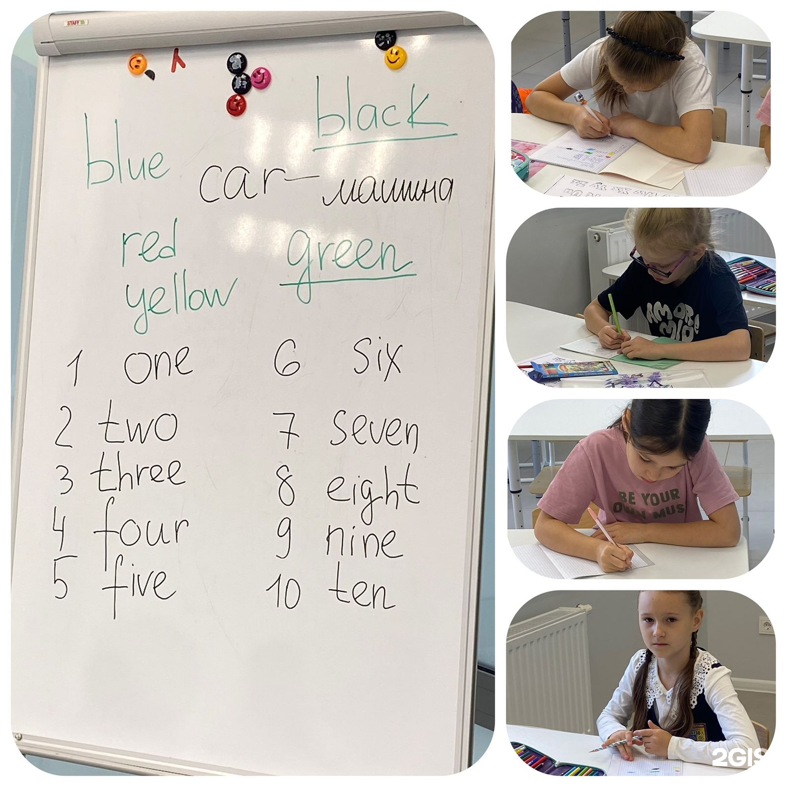
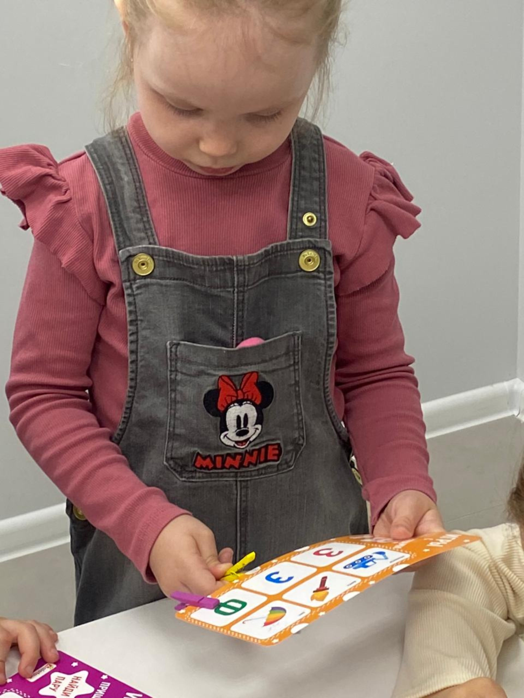

Начать знакомство
Укажите возраст ребёнка и расскажите, занимался ли он раньше. Это поможет обсудить подходящую группу.
Обсудить первые занятияЗнакомиться с английским, пробовать новое и расти — в детском центре «Акварелька» рядом с домом.
Начнём с возраста и ваших пожеланий.
Расписание и стоимость уточним перед записью.

Выбираете первые занятия или хотите продолжить знакомство с языком? Расскажите о ребёнке — обсудим подходящий вариант.
Укажите возраст ребёнка и расскажите, занимался ли он раньше. Это поможет обсудить подходящую группу.
Обсудить первые занятияУже знакомы с английским? Расскажите о предыдущих занятиях и о том, что хотите развивать дальше.
Уточнить подходящую группуРасскажите немного о ребёнке.
В заявке сразу учтём вопросы о группе,
расписании и стоимости.
Собрали важное перед первым
посещением центра.
Возрастные границы и состав групп нужно уточнить. Укажите возраст ребёнка в короткой форме — администратор подберёт подходящую группу.
Время, частота и продолжительность занятий английским не опубликованы. Центр указан в 2ГИС как работающий ежедневно с 08:00 до 20:00 по расписанию занятий. Перед визитом согласуйте время.
Стоимость английского в карточке не указана. Запросите актуальную цену, состав абонемента и условия оплаты перед записью. Цены подготовки к школе не относятся к английскому.
Возможность, формат и стоимость пробного посещения нужно согласовать с администратором. Бесплатное пробное занятие в источнике не заявлено.
Оставьте заявку через форму или позвоните по номеру +7 917 266-65-97. Сообщите возраст и опыт ребёнка; наличие мест и подходящий формат подтвердит администратор.
До записи уточните условия пропусков, переноса и перерасчёта в договоре центра. Универсальные условия в карточке не опубликованы.
В 2ГИС указаны наличный расчёт и перевод с карты. Порядок оплаты, реквизиты и актуальные условия абонемента уточните у администратора.
Казань, улица Рауиса Гареева, 111 к1, ЖК «Сказочный лес», 1 этаж. В карточке отмечен пандус. Откройте вход и маршрут в 2ГИС .
В карточке указаны подготовка к школе, курсы для детей и художественные курсы. Конкретные программы и текущий набор можно уточнить через форму или по телефону.

«Акварелька» — центр детского творчества и развития. В отзывах родители отмечают заботу о детях, внимание педагогов и желание возвращаться на занятия.
На первом экране — настоящее фото английского.
Здесь — момент из других занятий центра.
«Очень внимательно, профессионально и по доброму относятся к детям и родителям».
Родитель отмечает, что ребёнок с радостью ходит в центр, а педагоги находят индивидуальный подход.
Отзывы о центре и его занятиях в целом; они не являются обещанием результатов по английскому.
Другие направления «Акварельки»,
указанные в карточке центра.
Центр детского творчества и развития
Казань, Рауиса Гареева, 111 к1Ежедневно, 08:00–20:00
По расписанию занятий. Согласуйте визит заранее.